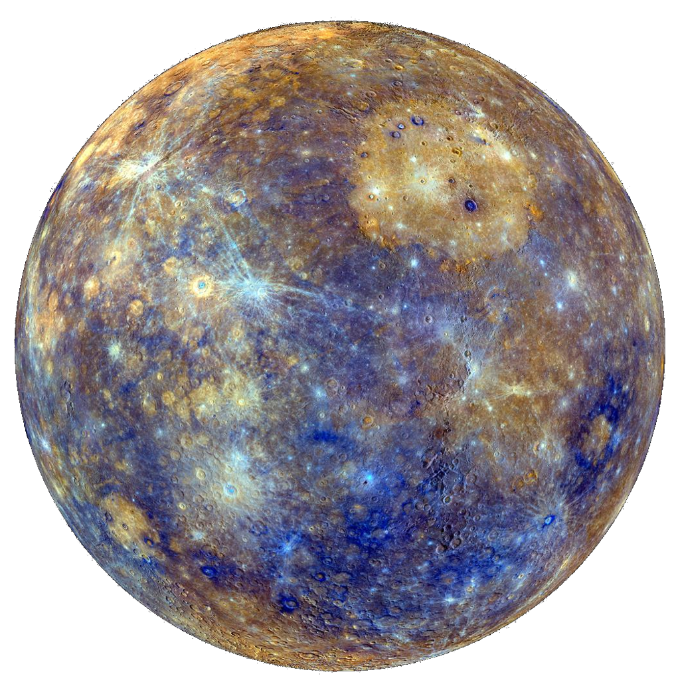
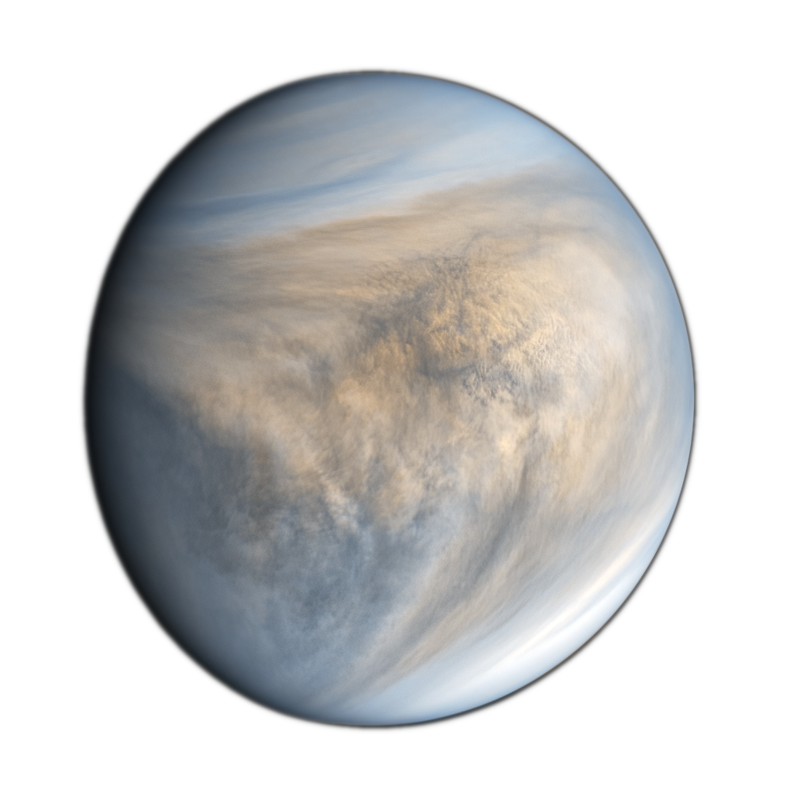
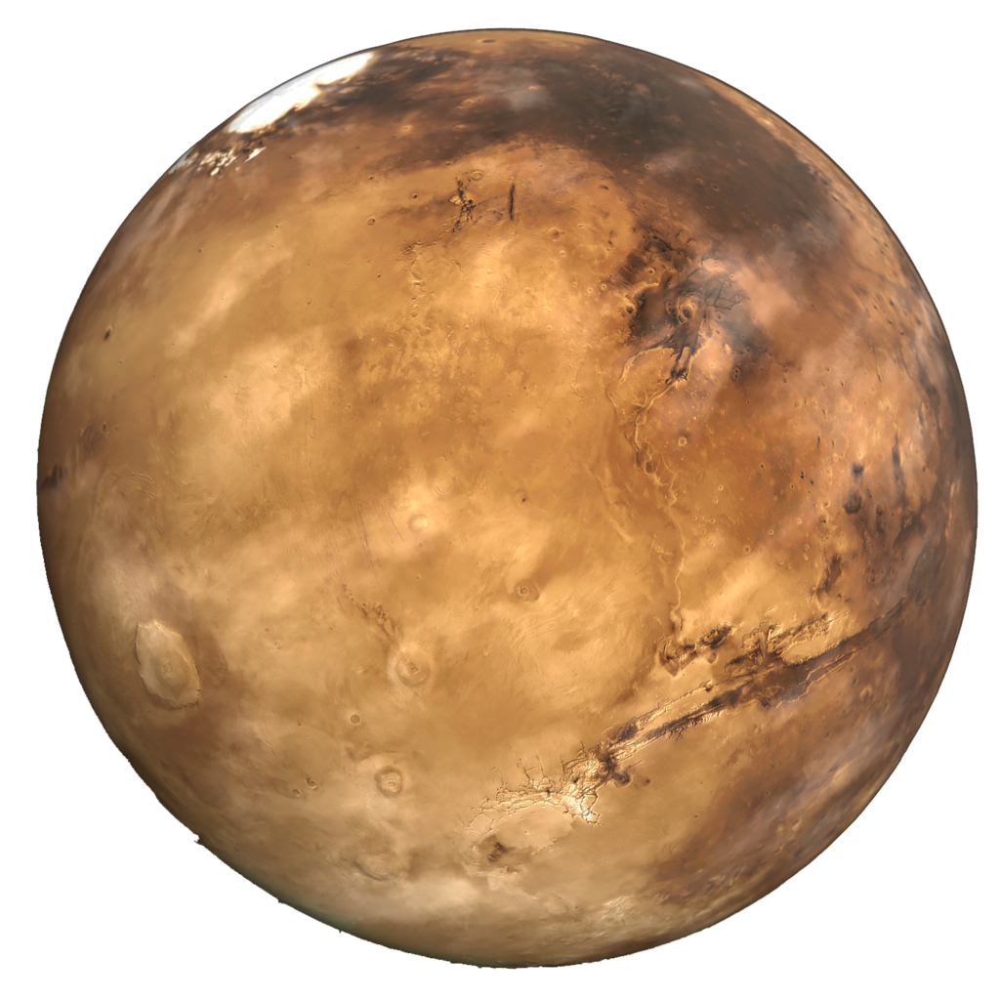
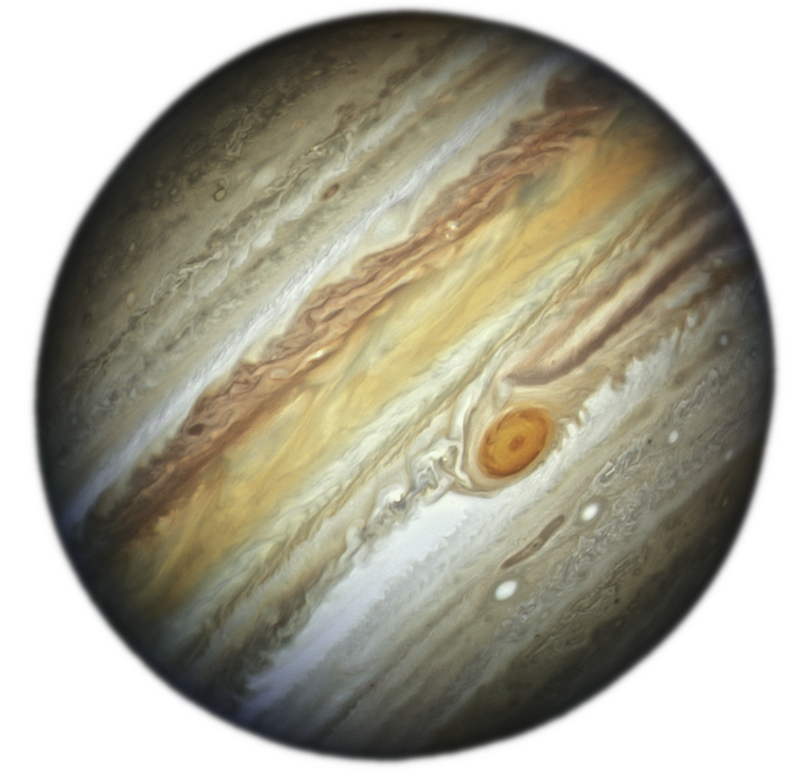
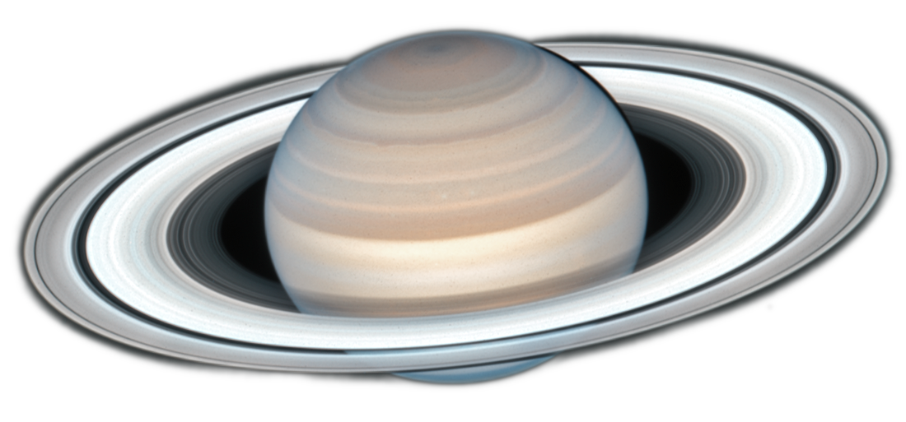
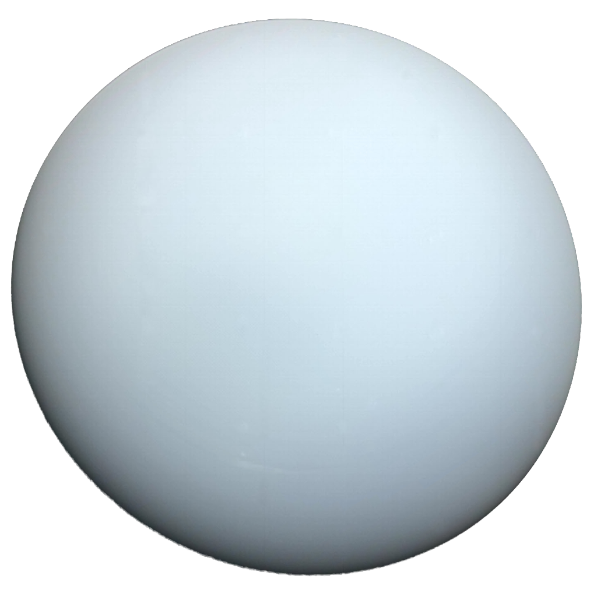
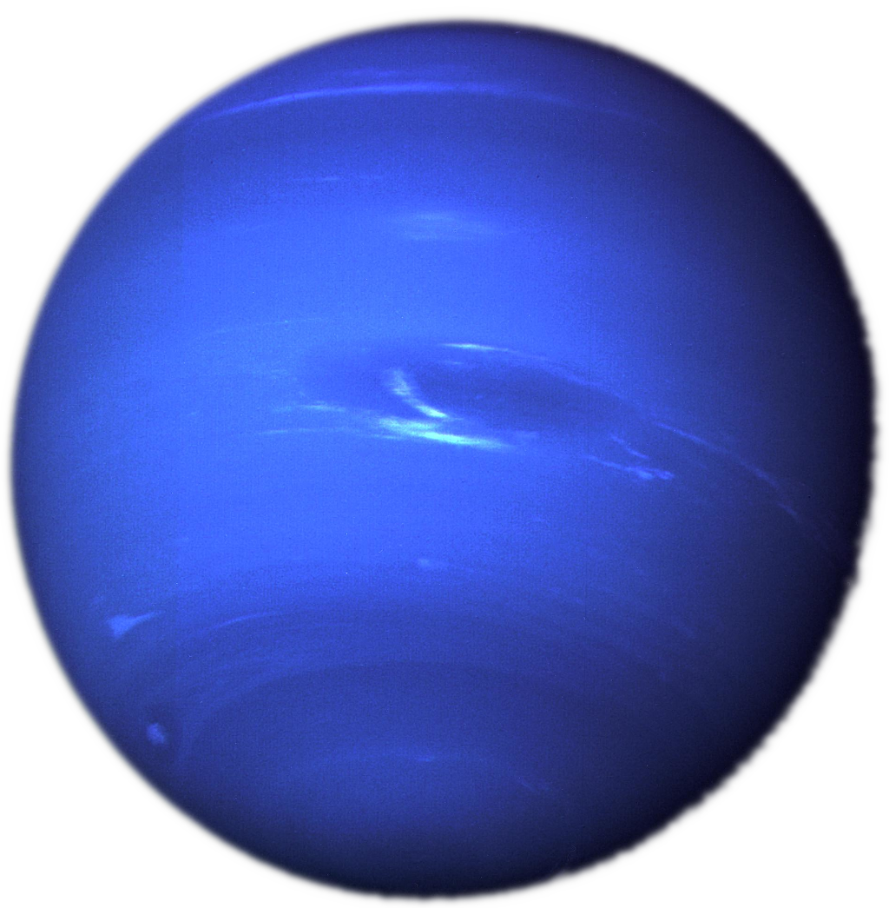

Mercury
Average of 58 Milion Kilometers From the Sun
The length of a year is 88 Earth Days
Mercury is the Smallest Planet In Our Solar System
Radius of 2,439 Kilometers
Venus
Average of 108 Milion Kilometers From the Sun
The Length of a year is 225 Earth Days.
Venus is the Hottest Planet: 464°C
Radius of 6,050 Kilometers
Earth

Average of 150 Milion Kilometers From the Sun
The Length of a year is 365 Days
1 Moon
Radius of 6,371 Kilometers
Mars
Average of 228 Milion Kilometers From the Sun
The Length of a year is 687 Earth Days.
2 Moons
Radius of 3,390 Kilometers
Jupiter
Average of 778 Milion Kilometers From the Sun
The Length of a year is 4,333 Earth Days.
Over 80 Moons
Radius of 71,492 Kilometers
Saturn
Average of 1.4 Billion Kilometers From the Sun
The Length of a year is 10,759 Earth Days.
Over 83 Moons
Radius of 58,232 Kilometers
Uranus
Average of 2.9 Billion Kilometers From the Sun
The Length of a year is 30,687 Earth Days.
27 Moons
Radius of 25,362 Kilometers
Neptune
Average of 4.5 Billion Kilometers From the Sun
The Length of a year is 60,687 Earth Days.
14 Moons
Radius of 24,622 Kilometers
More About Me →
© 2023 Janari Štšerbina